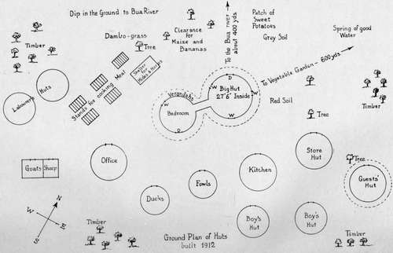

Introductory
Description
This section is from the book "Wild Life In Central Africa", by Denis D. Lyell. Also available from Amazon: Wild Life in Central Africa.
Introductory
For the last ten years I have spent a wandering sort of life in Nyasaland and North-Eastern Rhodesia, so, to get a short and descriptive title, I use the title " Wild Life in Central Africa."
I am afraid this is rather a disjointed kind of volume, digressions are frequent, and possibly there is a certain amount of repetition. For this I can only plead that I have suffered much from malarial fever, both in India and Central Africa, and my memory is such that I sometimes forget what I have written soon afterwards.
Some people may think that this is rather a matter-of-fact kind of volume ; but, then, I am a matter-of-fact sort of person, and dislike embellishing my writing with fanciful or fictitious matter, or to read such literature written by other authors on sport and travel.
These pages are intended for the nomad big-game hunter, who loves to get away from the beaten track, where he can be free of the irksome conventionalities of civilised life, and where he can find a freedom that is impossible in more settled countries.
There is no country in Africa more isolated and cut off than are the territories I write of, and, in the parts away from the townships and settled districts, the hunter and traveller will rind the country and people in the primeval state they were before Europeans first settled in these regions.
In this volume I write rather pointedly and emphatically on some subjects connected with sport, and I lay great stress on the iniquity of firing long-range shots at game when it is usually not difficult to get fairly close and do good work. My reason for doing so is that such a lot of rash and careless shooting takes place that many harmless animals are sent off to die a slow and lingering death, unless they have the good fortune to be killed quickly by some prowling lion or leopard that may come on them.
I do not lay claim, especially in my earlier days of hunting, to bagging everything I fired at; but, with experience, I found that it pays to get to close quarters and make certain of my shot, with the consequence that I hardly ever lose anything I fire at nowadays.
The beginner is apt to get excited, and shoot carelessly, without taking pains to align his sights on a certain spot, and he usually thinks it sufficient if he manages to hit the beast anywhere in its body; but this is not good shooting, and neither will it lead to clean killing. What he should do is to pick the exact spot and aim at that; so close quarters are necessary if he is to see the exact angle at which the game is standing. It is all a matter of angle ; for game is not always found waiting broadside on, and many positions are presented to the hunter.
A good range for antelopes is 100 to 150 yards ; and for large game like elephant, rhino, or buffalo, a range of sixty or seventy yards is best, as the first bullet is the all-important one ; and the subsequent following up of a wounded dangerous beast is not so risky as when long shots are fired.
It is perhaps needless to remark that animals styled "dangerous game" are seldom dangerous until they are interfered with or wounded; and the only animals that may act offensively are man-eating lions at night, animals with young which are closely approached, or those that have been recently wounded and left by another hunter.
The following pages have been written in the bush, and I have had no opportunity of getting at books of reference, though these were not much required, as the book deals almost solely with my own experiences.
Having kept diaries for the ten years I have spent in Central Africa, I have found it difficult, out of so many notes, to find the most interesting ; so I have given the most recent, as they will give the sportsman a better idea as to the conditions pertaining at the present day, though the country has changed little since I first knew it in 1903 ; and there are still hundreds of square miles that have hardly ever been trodden by the foot of civilised man, and there game will be found in abundance by anyone who takes the trouble to go and look for it.
This is a country where camping out causes little hardship in the dry season, which is from May to December ; and the three great essentials of camp life—shade, fuel, and water—are plentiful, while native labour is cheap and-abundant. The country has not yet been spoiled, as British East Africa has been, by the influx of wealthy sportsmen who have thrown their money about without a thought for those who may follow them.
Besides giving a certain number of shooting experiences, I give other information on licences, tracking, the natives and other matters which may be of interest to my readers, and if my ideas do not meet with approval, I can only say that they are the thoughts of a single individual, though I have tried not to let my pen run away with me when discussing any matter that may have several sides. Perhaps the lonely life I have led for so long in the silence of the bush is apt to make a man dogmatical and opinionative; but I like people who have decided opinions, so I hope my reader will make allowances if he does not agree with all I write.
The trophy hunter who comes here should manage a six months trip for a sum of £50 monthly, including passages from, and return to, home ; and if he goes about on his feet instead of engaging twelve to sixteen men to carry him in a machilla, he would have no difficulty in doing the trip for the sum stated.
He should bring his rifles, cartridges, tent, camp outfit, and clothes and boots, from home, as these things are difficult to procure here. Foodstuffs can be got in the townships, but they, too, would cost less to bring out and they would be fresh.
The Army and Navy Stores and other firms know how to pack provisions in useful cases not weighing more than 5olb. each, which is the usual weight of a porter's load, though I think 401b. better if long marches are taken. Such cases when empty are very useful for sending home small horns, curios, or headskins of small size; and for the larger trophies nothing can beat large green canvas bags.
I give some pages on camp outfit and rifles, so need not discuss the subject now at any length.
The best time to arrive here would be the month of June, as the grass fires do not usually take place much before July, and the best route is from England to Chinde. If a sportsman could only afford three months in the country, he should get all the game he wants in the Chiromo district, which is only four or five days' journey from Chinde by river steamer; and the game includes elephant, buffalo, eland, waterbuck, hartebeest, zebra, sable antelope, bushbuck, reedbuck, duiker, oribi ; and a possibility of lion, leopard, kudu, and other animals.
In conclusion, I have to thank the proprietor and the editor of the Field newspaper for permission to use some articles I wrote for that periodical at different times.
Also I am obliged to a good sportsman who writes to that journal in the name of "Mannlicher" for having given me permission to quote a short letter about " Photographing Big Game."
My friend George Garden, of Mlanje, Nyasaland, has again allowed me to use some of his fine photographs, and I would like to acknowledge his kindness here.
I may say that most of the photographs of game are by myself, but some are not as good or clear as I would like, which is doubtless due to the effect of a damp climate on the films.
The photographs of the situtunga, sassaby, black and red lechwe have been kindly sent me by Mr. J. E. Hughes, who has had much experience of the country bordering Lake Bangweolo, and who is, I believe, prepared to act as guide to any sportsmen wishing to make a shooting trip in these regions.
D. D. Lyell.
Bua River, Nyasaland.
March 20, 1913.
My Permanent Hunting Camp
Continue to: